Ministry of Tourism Lebanon
DISCOVER LEBANON
The Beqaa Governorate occupies the southern half of the great Beqaa Valley, a wide, flat plain running north to south between the Lebanon Mountain range to the west and the Anti-Lebanon mountains to the east. It is one of the most fertile regions in the Middle East, and has been farmed continuously since antiquity. The valley floor sits at roughly 900 meters above sea level, giving it a drier, more continental climate than the Lebanese coast.
The land here is open in a way that surprises visitors used to Lebanon's cramped coastal cities and dramatic mountain terrain. Vast fields of wheat, sunflowers, and vegetables stretch across the valley floor, interrupted by rows of grapevines that produce some of the finest wine in the Arab world. The Beqaa is Lebanon's wine country, and it wears that identity with quiet pride.
Rivers cut through the valley, most notably the Litani, Lebanon's longest river, which originates in the northern Beqaa and winds south before turning west toward the sea. The landscape is ancient, agricultural, and unhurried, with a stillness that feels completely different from the energy of Beirut just an hour away.
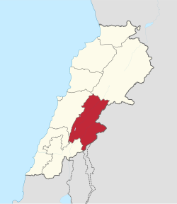
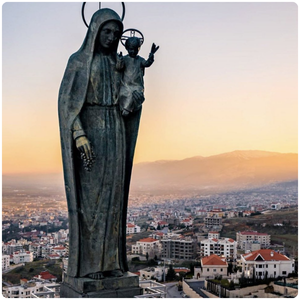
Zahlé is the capital of the Beqaa Governorate and one of Lebanon's most charming cities. Built along the banks of the Bardawni River, its famous restaurant promenade lines the riverbank with dozens of open-air dining terraces that fill every evening with the sound of arak glasses, laughter, and live music. The city has a predominantly Greek Catholic population and a warm, festive character that makes it one of the most welcoming places in Lebanon.
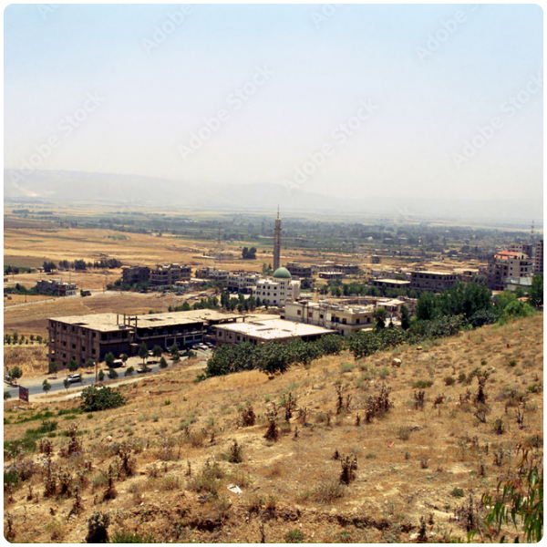
Chtaura sits at the main junction where the Beirut–Damascus Highway enters the Beqaa Valley, making it the natural gateway to the entire region. It is a busy, practical town known for its dairy products, particularly its labneh and white cheese, which are sold at roadside stalls that Lebanese families stop at on every trip through the valley. Not glamorous, but deeply Lebanese.
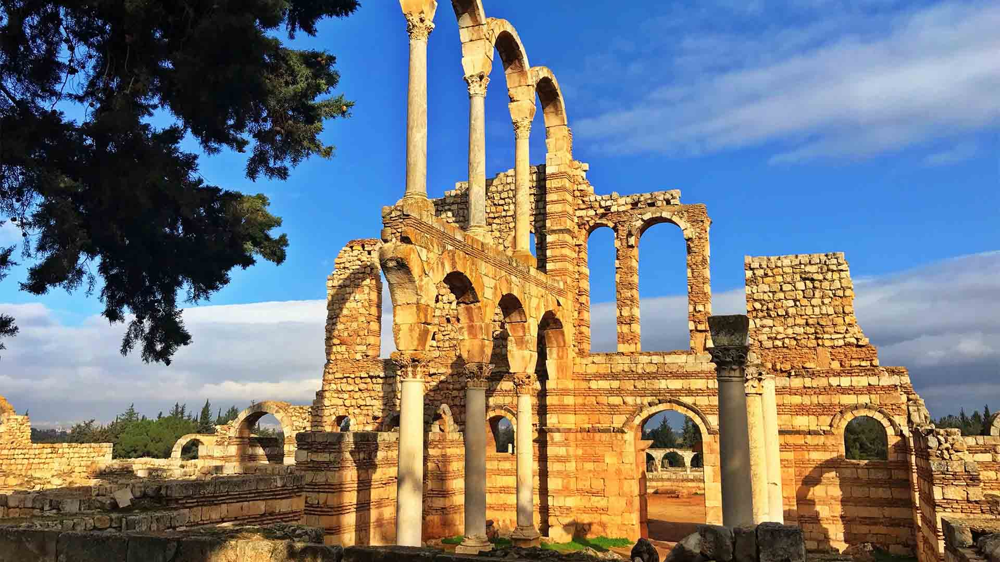
Aanjar is a small town with an extraordinary secret, the remarkably well-preserved ruins of an entire Umayyad palace city, built in the early 8th century and occupied for only a few decades before being abandoned. The ruins cover a large area and include palaces, a grand mosque, shops, and colonnaded streets laid out in a precise Roman-influenced grid. It is a UNESCO World Heritage Site and one of Lebanon's most underrated historical destinations.
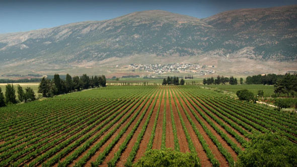
The area around Ksara and the surrounding Beqaa villages is the center of Lebanon's wine industry, a tradition dating back to the Phoenicians and revived by Jesuit priests in the 19th century. The Château Ksara winery, founded in 1857, is Lebanon's oldest and most visited winery, offering cellar tours through ancient Roman caves and tastings of award-winning Lebanese wines. Several other notable wineries operate in the same area.
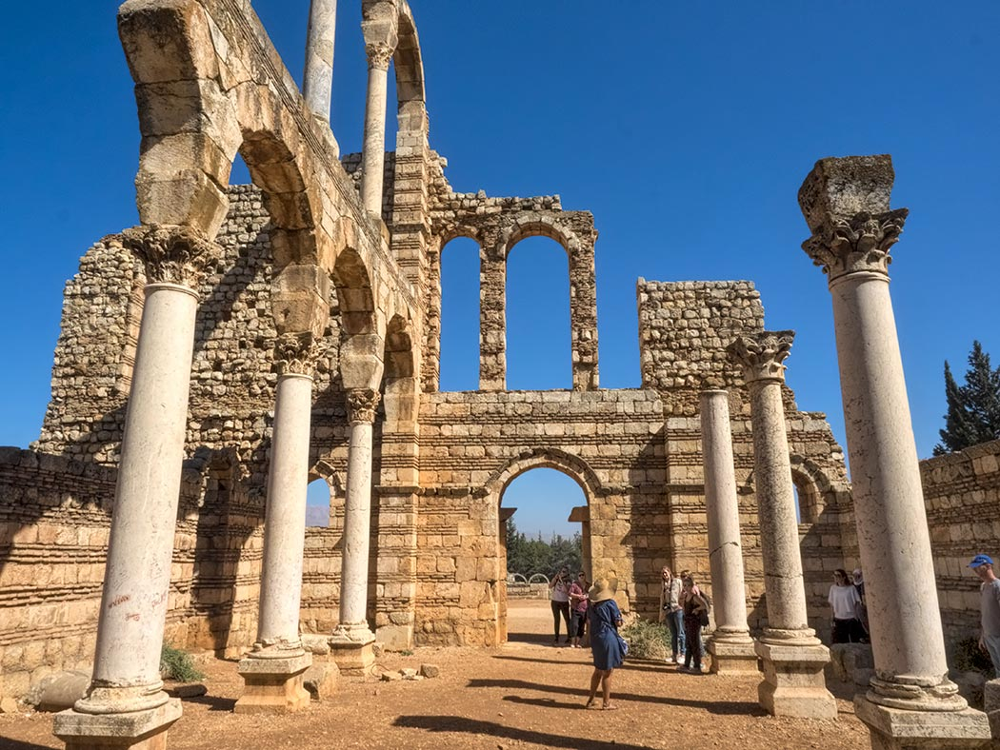
The ancient city of Aanjar is one of the four UNESCO World Heritage Sites in Lebanon and the only site in the country from the Islamic Umayyad period. Built by Caliph Walid I around 714 AD, it served as a commercial and administrative center before being destroyed by the Abbasids. The standing columns, mosaic floors, and reconstructed palace walls give a vivid sense of early Islamic urban planning, elegant, geometric, and remarkably intact.
Founded by Jesuit priests in 1857, Château Ksara is Lebanon's oldest winery and one of its most beloved institutions. The estate sits on the valley floor surrounded by vines, and beneath it runs a network of ancient Roman caves used to age the wine in near-perfect conditions. Tours take visitors through the caves and into the vineyards, ending with a tasting of Ksara's celebrated red, white, and rosé wines. A beautiful and unexpectedly moving experience.
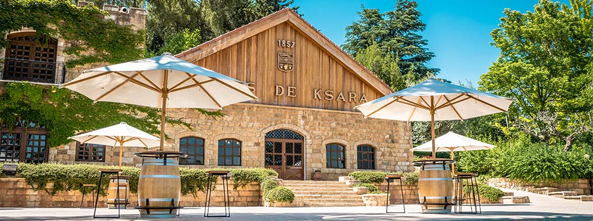
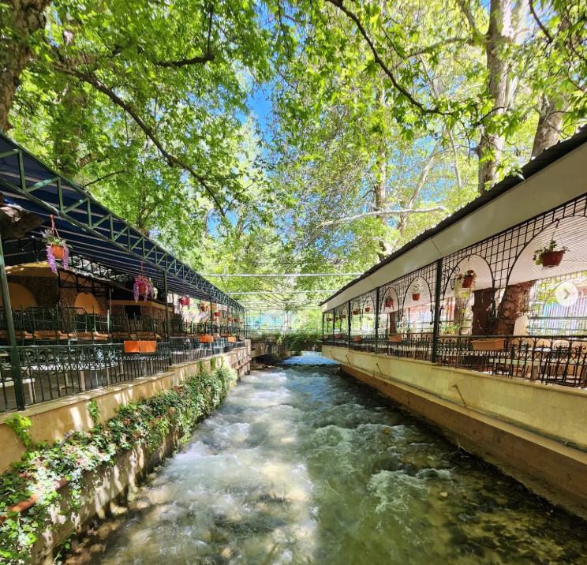
The Bardawni River promenade in Zahlé is one of the most beloved dining destinations in all of Lebanon. Dozens of restaurants line both sides of the river, their terraces extending over the water, lit with lanterns at night, and filled with the sounds of live Arabic music. The tradition here is to eat long and eat well, mezze, grilled meats, fresh bread, and arak, while the river runs beneath you. It is a deeply Lebanese experience, and one of the most enjoyable evenings you can have in the country.
Lebanon's longest river, the Litani, originates in the northern Beqaa and flows through the valley before turning sharply west toward the sea. Along its banks, the landscape opens up into some of the most sweeping views in Lebanon, flat farmland stretching to the mountains on both sides, the sky enormous overhead. Driving through the valley at dawn or dusk, when the light is low and golden across the fields, is one of those quiet travel moments that stays with you long after you leave.
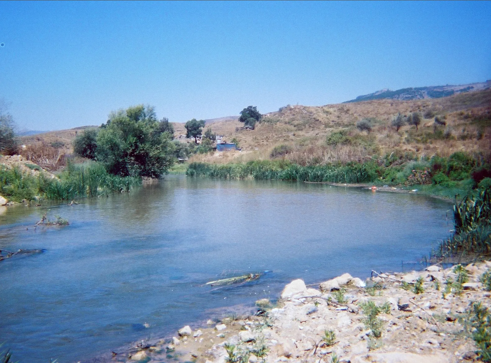
The Beqaa Valley is about 50 to 85 km from Beirut depending on your destination, roughly an hour to 1.5 hours by car through the mountains. The drive over the Lebanon range is one of the most scenic in the country.
All international visitors arrive at Beirut–Rafic Hariri International Airport. From there, the Beqaa is reached by heading east through the mountains via the Dahr el-Baydar pass or the Mdeirej road.
Take the Beirut–Damascus Highway east from Beirut, climbing over the Lebanon Mountains before descending into the valley. The junction at Chtaura connects you north toward Zahlé and Baalbek, or south toward Aanjar and the lower valley.
Minibuses and service taxis from Cola Transport Hub in Beirut run regularly to Zahlé and Chtaura. From there, local taxis can take you to Aanjar, the wineries, and surrounding villages.
The mountain pass at Dahr el-Baydar can close due to snow between December and February. The valley itself stays accessible year-round, but always check mountain road conditions before setting out in winter.
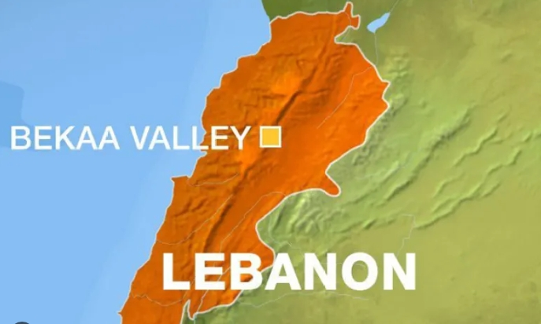
The Beqaa moves at a different pace from the rest of Lebanon. It is slower, wider, and more open, a place where the horizon is actually visible, and where the pleasures of food, wine, and landscape come together in a way that feels completely its own.
Start your morning at a roadside dairy stall in Chtaura, fresh labneh, white cheese, and bread warm from the oven, eaten beside your car with the mountains on both sides of the valley.
Spend the afternoon walking through the Aanjar ruins, nearly alone among ancient Umayyad columns, with the Anti-Lebanon mountains as your backdrop.
Tour the caves of Château Ksara and taste a glass of Lebanese red wine aged beneath Roman stone, a quietly extraordinary experience.
Drive through the vineyard roads in October when the harvest is underway, the vines are heavy with grapes, the air smells of fermenting fruit, and the valley is at its most alive.
End the evening on the Zahlé promenade, a long table, mezze arriving in waves, arak poured over ice, and the sound of the Bardawni River running beneath your feet.
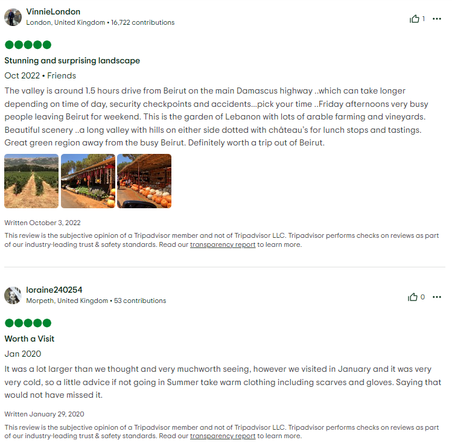